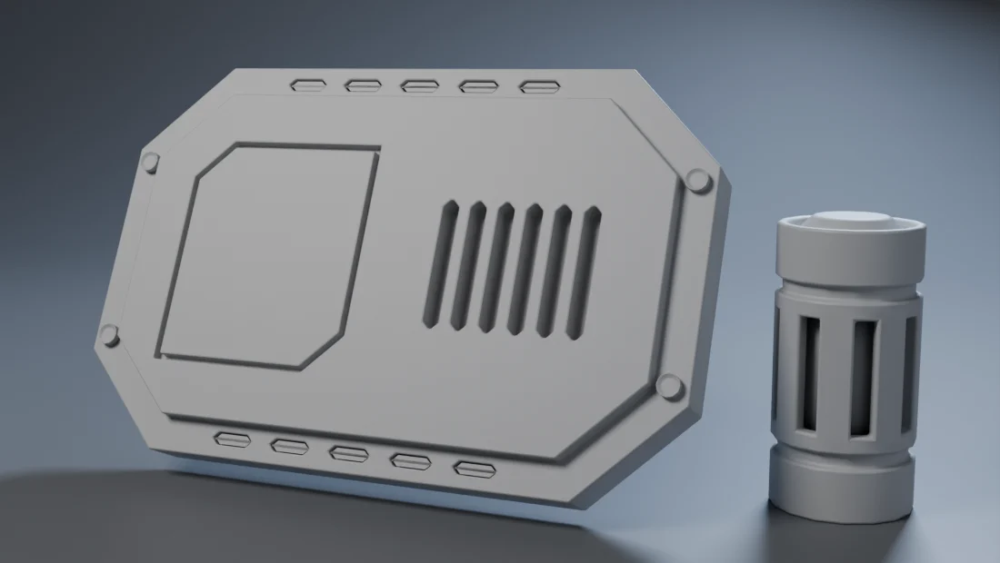
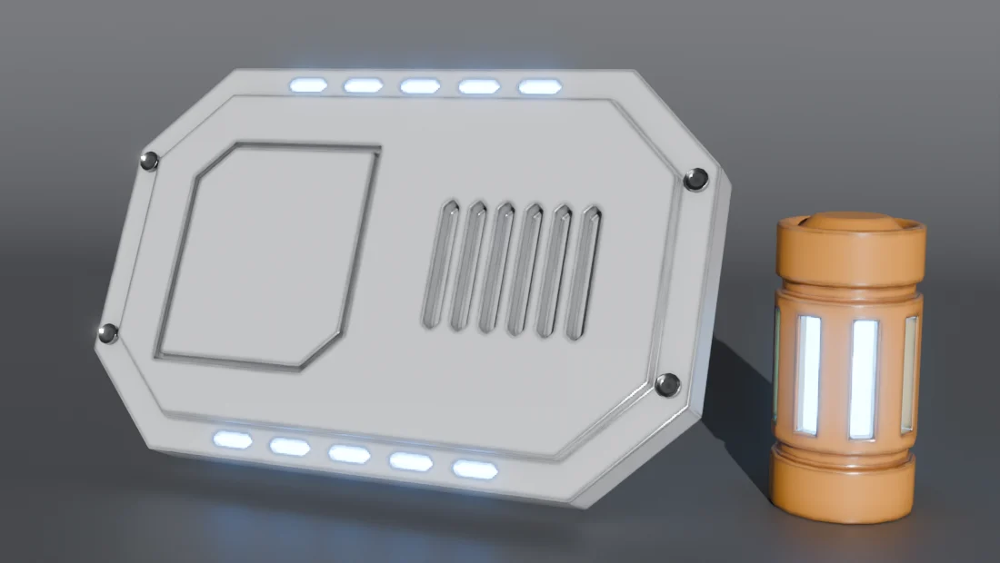
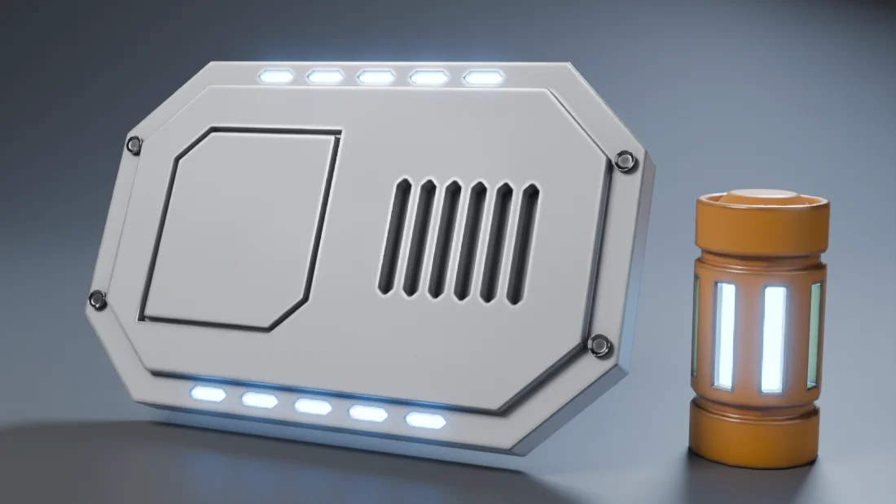
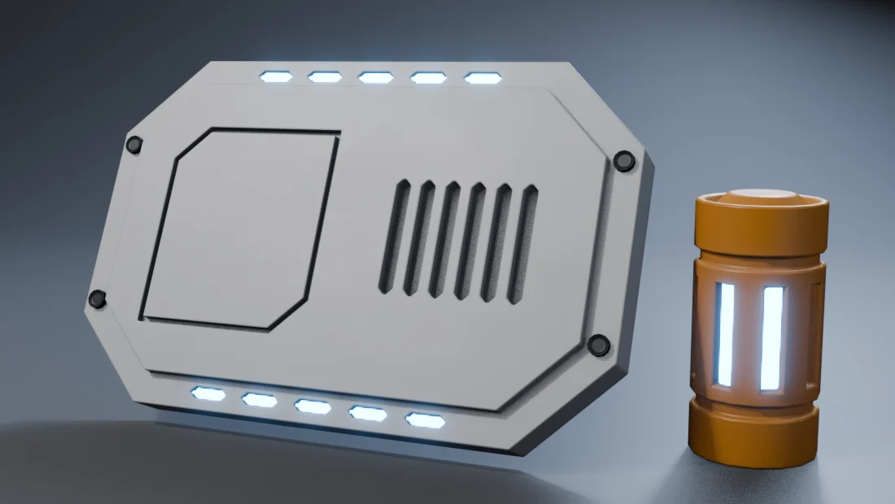

La transformación // objetivo

Es la placa del módulo 3 y la celda del módulo 1, renderizadas con Cycles. Amplía las imágenes y fíjate en los bordes de la placa en el paso 3.
Cómo funciona un material // concepto
El nodo Principled BSDF imita materiales reales con unos pocos valores. Para hard surface solo necesitas cuatro:
| Entrada | Qué hace | Valores típicos |
|---|---|---|
| Base Color | El color de la pintura, o el tono del metal | Evita el blanco y el negro puros: 0.75 y 0.04 son más realistas. |
| Metallic | 0 = pintura o plástico; 1 = metal desnudo | Casi siempre 0 o 1. Los valores intermedios solo para mezclas (bordes gastados). |
| Roughness | Lo pulido o mate que es: lo que más vende el realismo | Pintura 0.35–0.5, metal pulido 0.15–0.25, goma 0.7+. |
| Emission | Luz propia | Color + Strength 5–15 para luces de interfaz. |
Activa Node Wrangler (viene con Blender: Preferences → Add-ons). Con Ctrl+Shift+clic en un nodo ves su resultado directamente, lo que es perfecto para entender qué hace cada paso.
Rugosidad viva
Ninguna superficie real tiene la misma rugosidad en todas partes. Una variación sutil hace que los reflejos «respiren»:
- En el Shader Editor (workspace Shading), añade Shift+A → Texture → Noise Texture con Scale 4.
- Su salida Fac → un nodo Map Range con To Min 0.32 y To Max 0.52 → a Roughness.
Sutil es la clave: si se nota el ruido como manchas, te has pasado. Tiene que verse solo en los reflejos, al girar el modelo.
Pintura y paleta
- Varios materiales en un objeto: pestaña Material → + para un nuevo hueco → New. En modo edición, selecciona las caras → Assign.
- Regla 60 · 30 · 10: un color principal (blanco, 60 %), uno secundario (grafito, 30 %) y un acento (naranja o luz azul, 10 %). Es la paleta clásica de los mechas.
- Guarda tus materiales como asset (clic derecho sobre el material → Mark as Asset) para tenerlos en tu biblioteca del módulo 5.
Desgaste en los bordes
Donde las piezas se golpean y rozan, en los bordes, la pintura se va y aparece el metal. Blender puede detectar los bordes con el nodo Bevel:
- Bevel (Input → Bevel) da una normal «redondeada» en los bordes; Geometry → Normal da la real.
- Vector Math → Dot Product de las dos: en las caras planas vale 1 y en los bordes, menos. Con Math → Subtract (1 − x) obtienes una máscara que es blanca en los bordes.
- Multiplícala por una Noise Texture (Scale 12, Detail 8) para que el desgaste sea irregular, y ajústala con Map Range (From 0.01–0.05).
- Esa máscara es el Factor de un Mix Color entre la pintura y el metal oscuro, y también va a Metallic. Haz otra mezcla para que la rugosidad baje en el metal.
Solo en Cycles. El nodo Bevel no funciona en EEVEE: en EEVEE la máscara sale vacía (lo verás más abajo). Para EEVEE puedes hornear la máscara a una imagen (Render Properties → Bake) o pintarla a mano en modo Texture Paint.
Suciedad en los rincones
- Nodo Ambient Occlusion (Input), con Distance 0.08: es oscuro en los rincones y huecos.
- Map Range con To Min 0.45, para que no llegue a negro puro.
- Mix Color en modo Multiply con el color que ya tenías.
Fíjate en el paso 3 de arriba: el interior de las ranuras y de la línea de panel queda más oscuro. Es la suciedad que se acumula donde no llega la mano para limpiar.
Emisivos y Glare
- Material de luz: en el Principled, Emission → Color azul y Strength 6–12. Mantén el color base oscuro: así, si la luz se «apaga» parece cristal.
- El halo: workspace Compositing → Use Nodes → entre Render Layers y Composite añade Filter → Glare en modo Fog Glow (Threshold 1.2, Size 7).
- Las luces también iluminan: en Cycles, una superficie emisiva ilumina de verdad lo que tiene cerca. Mira el reflejo azul en la celda.
Iluminación


Mismos materiales, distinta luz. Con una luz plana de frente desaparecen el volumen y los reflejos: los materiales no tienen nada que reflejar. Con el estudio del módulo 0, las caras se separan por el tono y los bordes brillan.
HDRIs gratis: Poly Haven tiene cientos de entornos con licencia CC0 (puedes usarlos para lo que quieras). En World Properties: Color → Environment Texture y abre el HDRI. Da reflejos realistas al metal.
EEVEE vs Cycles // motores

EEVEECYCLES| EEVEE | Cycles | |
|---|---|---|
| Velocidad | Segundos, casi en tiempo real | Minutos, sobre todo sin una tarjeta gráfica potente |
| Realismo | Muy bueno, con aproximaciones | Físico: rebotes de luz, emisivos que iluminan, sombras exactas |
| Nodo Bevel | ✘ No funciona: sin desgaste en los bordes | ✔ |
| Úsalo para | Trabajar, probar luces y renders rápidos | El render final de portfolio |
Cycles rápido: Samples 64–128 + Denoise activado. Si tienes gráfica NVIDIA o AMD, actívala en Preferences → System → Cycles Render Devices y pon Device: GPU en las propiedades de render.